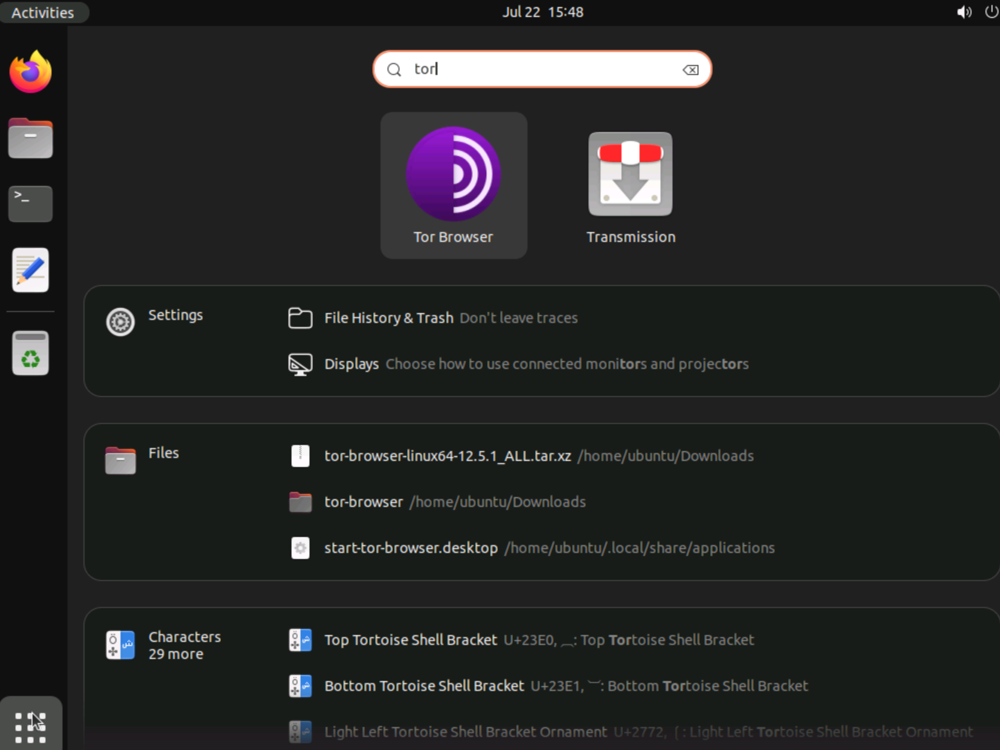
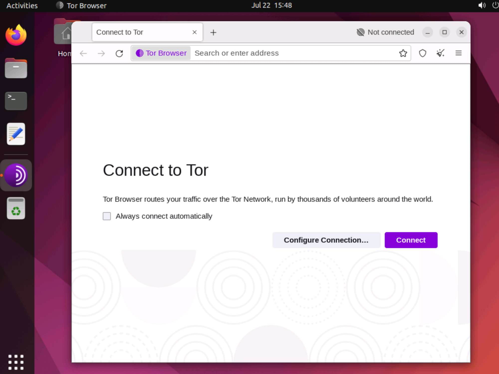
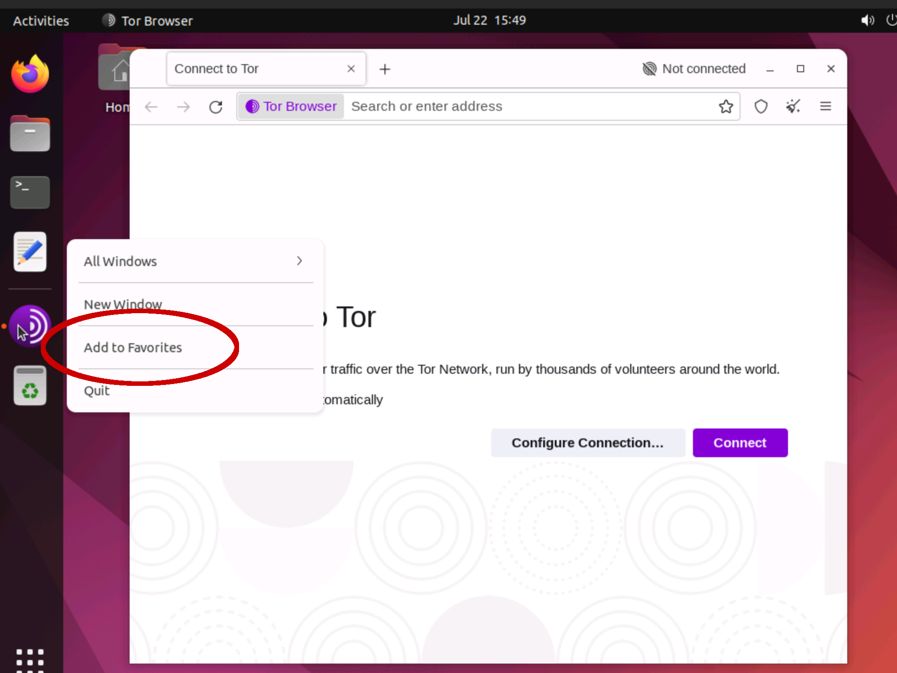
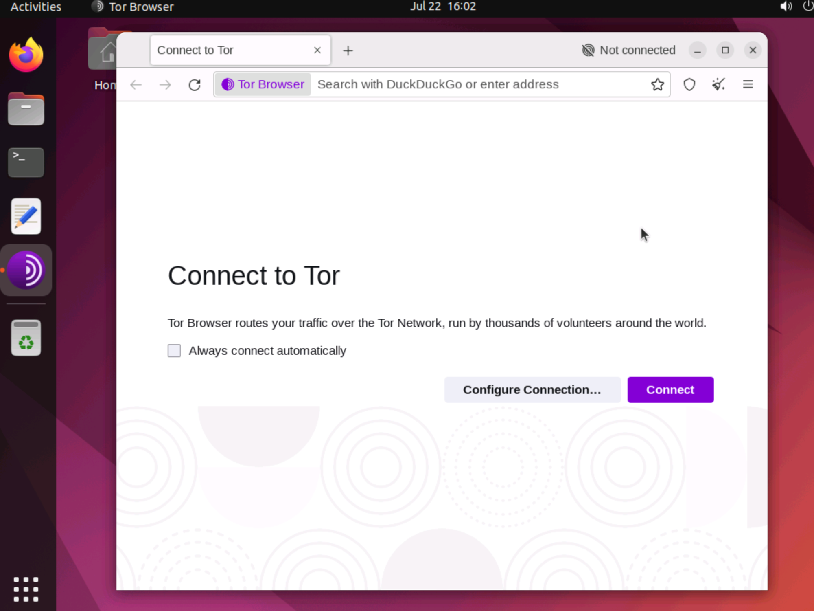
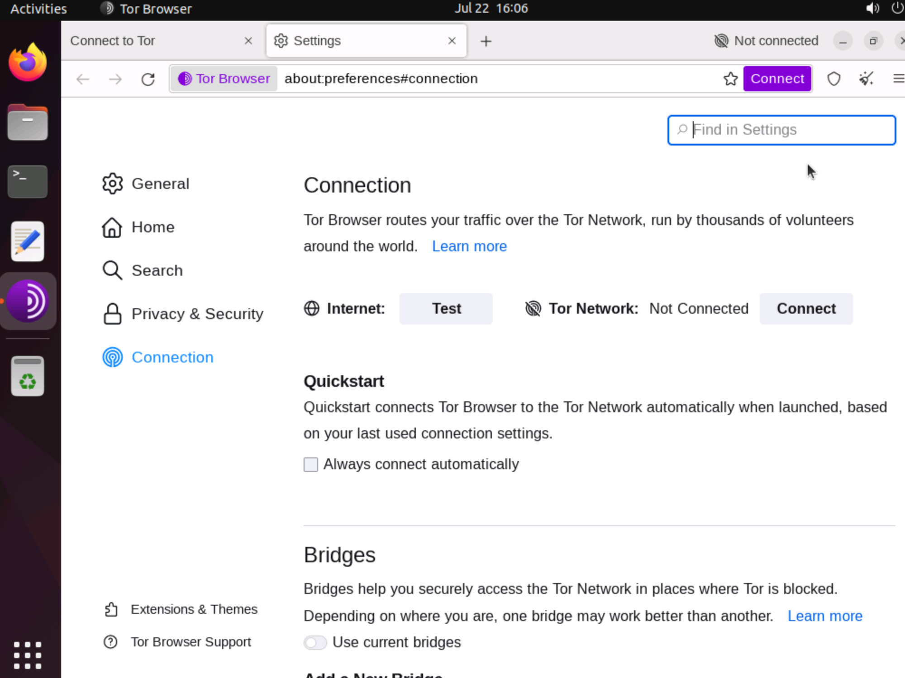
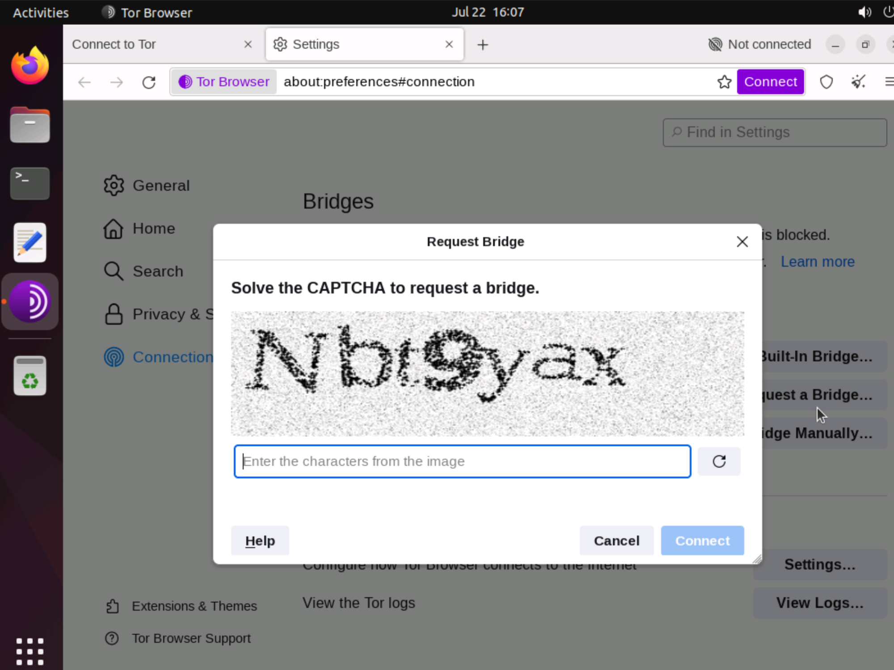
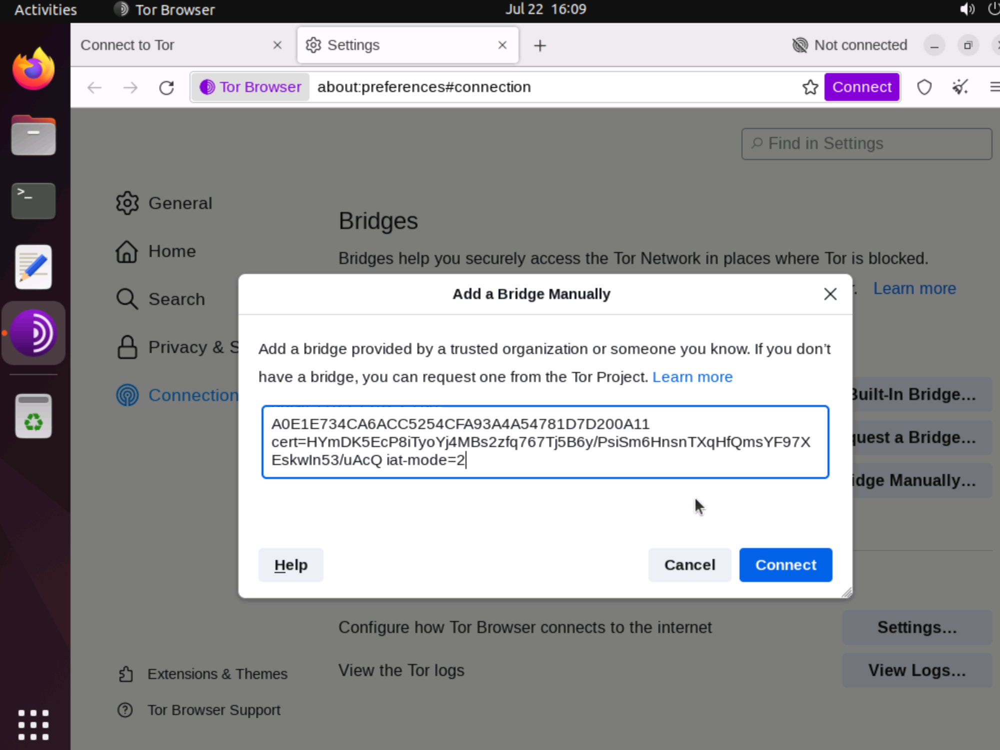
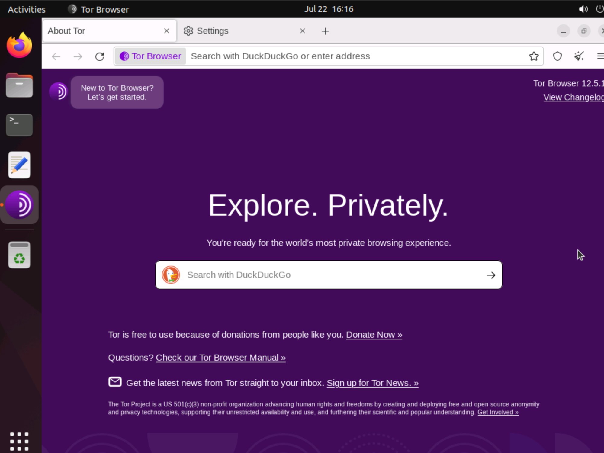
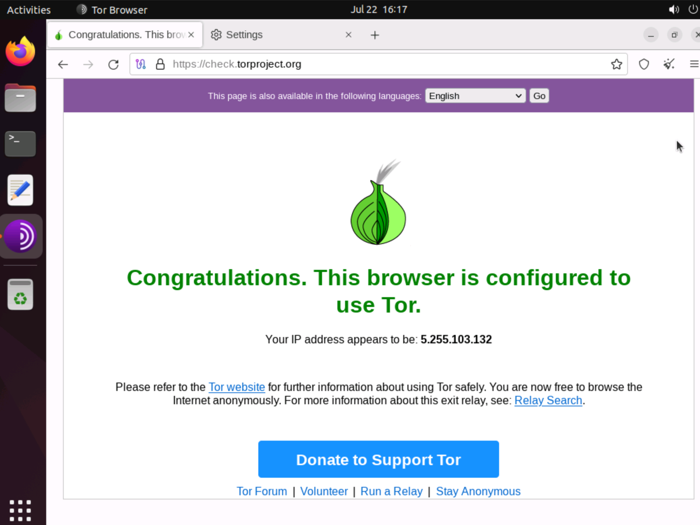
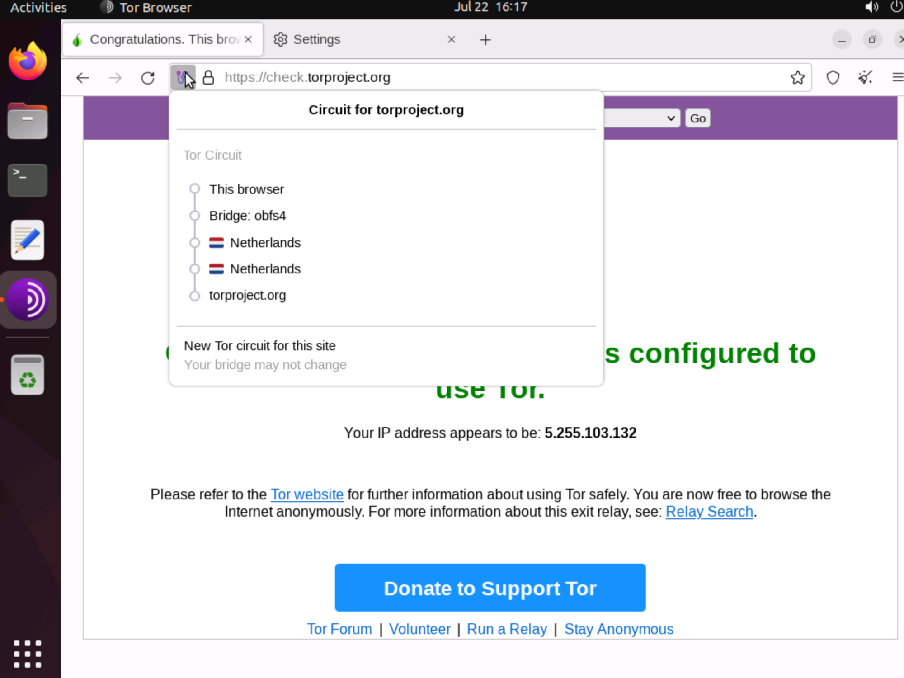

July 22, 2023
Here is an outline of the process you need to start using Tor Browser. The emphasis is on pointing out the steps for bridge users.
Download Tor Browser for Windows, macOS, or Linux from https://www.torproject.org/download. For situations where *.torproject.org is blocked, or if you need further help in downloading Tor, email frontdesk@torproject.org.
For Windows you will get an installer .exe file to run.
For macOS you will get a .dmg disk image file to install as an application.
For Linux you will get a .tar.xz file to extract like this:
cd ~/Downloadstar -xf tor-browser-linux64-*.tar.xzcd tor-browser./start-tor-browser.desktop --register-appAfter registering the app, Tor Browser appears in your list of apps.
Start the app, but don't connect to the Tor network just yet.
On Ubuntu Linux with the GNOME desktop, you can right-click on Tor Browser in the launcher and select the option Add to Favorites.
At this point you have a choice. Do you need some special configuration because you are in a restricted environment? Or are you free to connect to the Tor network directly?
If you choose Connect directly, you can ignore the special steps that follow for bridge users.
If you press Configure Connection, you will be taken to the Connection settings screen.
Scroll down to the options for bridges. You will see three choices:
Built-in bridges are already included in Tor Browser. You do not need to specify the bridge parameters if you use this option.
If you request a bridge, you will need to solve a CAPTCHA test. Your bridges will then be automatically issued to you and configured in Tor Browser ready for use.
If you choose to add a bridge manually, you must now enter the bridge line provided to you by the person who set up the bridge.
Connect to the Tor network.
When I tested this, the connection got to 50% progress, and then there was a delay of about 2 minutes before the connection was completed. It may be necessary to wait a few minutes the first time you connect to a bridge.
However you connect, with or without a bridge, you will arrive at the initial screen.
If you are not sure if you are connected, try to visit https://check.torproject.org. A successful connection looks like this:
You can also press the circuit icon to the left of the address bar to show details of your current Tor circuit.
To chat with other Tor users, visit https://old.reddit.com/r/TOR.
The Tor Project forum for questions and discussions is at https://forum.torproject.org.
Frequently asked questions are answered at https://support.torproject.org.
For instructions on how to talk to the Tor Project team over IRC, visit https://support.torproject.org/get-in-touch.
For specialized email lists related to Tor, see https://lists.torproject.org/cgi-bin/mailman/listinfo.
You can reach the Tor Project front desk by email at frontdesk@torproject.org.